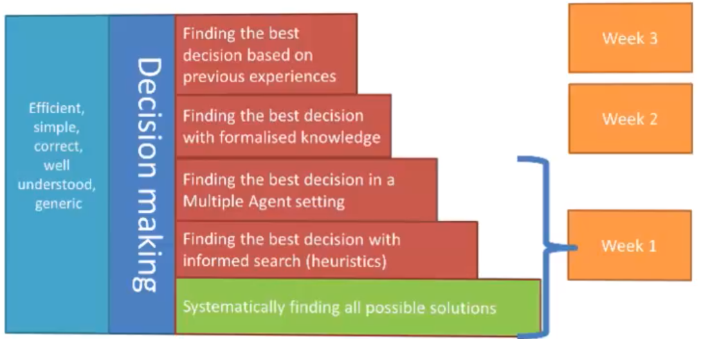
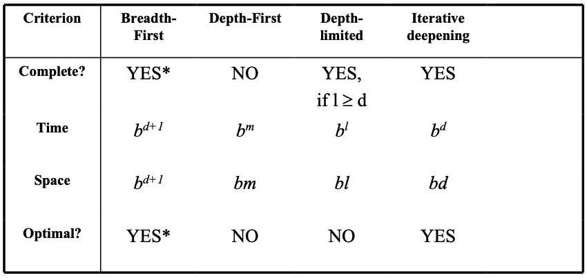
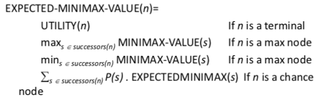
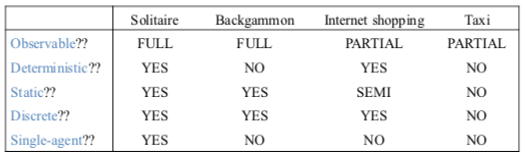

Intelligent Systems
core topics:
-
search & heuristics
-
knowledge
-
adaptivity

State Space Representations Intro
-
real world is complex, state space must be abstracted for problem solving
-
abstract states map to sets of real states
-
abstract action maps to combination of real actions
-
abstract solution = set of real paths that are solutions in real world
-
there may be multiple different state space representations
Problem-solving agent uses this representation:
-
what are actions to move between states?
-
what are appropriate states & initial states?
-
what is the cost of an action?
-
goal: what are the successful world states?
-
search: determine possible sequences of actions leading to goal, choose 'best' sequence
-
execute: give solution, perform actions
State space representation (example - vacuum cleaner):
-
start with real-life problem
-
formulate abstract problem (states, actions)
-
formulate concrete (clean house) & algorithmic goal (be in state 7 and 8)
-
find solution (sequence of actions to get to state 7 or 8)
-
execute plan (clean house according to abstract solution)
State space search
How do we find the solutions of previous problems?
-
search the state space
-
search through explicit tree generation: root is initial state, nodes/leaves generated through successor function
-
search generates a graph
state: representation of a physical configuration
node: data structure in the search tree. it contains state, parent node, actions, etc.
strategy defines picking order of node expansion
uninformed methods: only use problem definition
informed methods: use heuristic function to estimate cost of solution
evaluating performance:
-
does it always find a solution if there is one? (completeness)
-
does it find least-cost solution? (optimality)
-
how many nodes generated/expanded? (time complexity)
-
how many nodes are stored in memory during search? (space complexity)
-
complexity measured in terms of:
-
b: max branching factor of search tree)
-
d: depth of least cost solution
-
m: max depth of state space, could be infinite
-
time/space complexity measured in terms of max branching factor of search tree, depth of least cost solution, max depth of state space (could be infinite)

Breadth-first (BF) search
-
algorithm:
-
expand shallowest unexpanded node
-
implementation - fringe (nodes that have to be explored) is a FIFO queue
-
evaluation:
-
completeness: yes, if branching factor b is finite
-
time complexity: if every state has b successors, and solution is at depth d, then \(O(b^{d+1})\) because of number of nodes generated
-
space complexity: shitty if every node has to be in memory - \(O(b^{d+1})\)
-
optimality: in general yes, unless actions have different cost
-
memory requirements are bigger problem than execution time
Depth-first (DF) search
-
algorithm:
-
expand deepest unexpanded node
-
implementation: fringe is a stack
-
evaluation:
-
completeness: no, unless search space is finite and no loops are possible
-
time complexity: shitty if m is larger than d (depth of optimal solution) -- \(O(b^m)\). but if many solutions, faster than BF
-
space complexity: backtracking search uses less memory, one successor instead of all b -- \(O(bm+1)\)
-
optimality: no, same issues as completeness
Depth-limited search
-
DF-search with depth limit l (nodes at depth l have no successors)
-
solves infinite-path problem
-
evaluation:
-
time: \(O(b^l)\)
-
space: \(O(bl)\)
-
completeness: not if l < d
-
optimality: not if if l > d
Iterative deepening search
-
strategy to find best depth limit l
-
often used in combination with DF search
-
after each iteration, throw away everything and increase depth limit
-
combines benefits of DF (space complexity) and BF search (time complexity)
-
evaluation:
-
completeness: yes (no infinite paths)
-
time: \(O(b^d)\)
-
space: \(O(bd)\)
Heuristic function: "educated guess that reduces/limits search for solutions"
informedness property of heuristics:
-
two heuristics \(h_1(n),\; h_2(n)\) with \(0 \leq h_1(n) \leq h_2(n) \leq h*(n)\)
-
then \(h_2(n)\) is more informed than \(h_1(n)\)
-
with \(h_1\) fewer nodes have to be searched with \(h_2\)
-
but \(h_2\) is often more expensive to calculate
-
perfect heuristics: \(h(n) = h*(n)\)
-
trivial heuristics: \(h(n) = 0\)
Best-first search
-
the general approach of informed search
-
node selected for expansion based on evaluation function f(n)
-
evaluation function measures distance to goal, choose node which appears best
-
fringe is queue in order of decreasing desirability
A Search
best-known form of best-first search
avoid expanding paths that are already expensive
evaluation function: \(f(n) = g(n) + h(n)\)
-
g(n) the cost so far to reach node n
-
h(n) estimated cost to get from node n to goal
-
f(n) estimated total cost of path through node n to goal
A* Search
A search, but with an admissible heuristic
-
heuristic is admissible if it never overestimates the cost to get to goal
-
admissible heuristics are optimistic
-
formally: \(h(n) \leq h*(n)\) where \(h*(n)\) is true cost from n to goal
evaluation:
-
complete: yes
-
time: exponential with path length
-
space: all nodes are stored
-
optimal: yes
Adversarial search
search has no adversary, solution is a (heuristic) method for finding a goal
games have an adversary, solution is a strategy. time limits force an approximate solution.
you need a function to evaluate the "goodness" of a game position
types of games:
|
_____________________
|
deterministic
|
chance
|
|
perfect information
|
chess, checkers, go, othello
|
backgammon, monopoly
|
|
imperfect information
|
|
bridge poker, scrabble, nuclear war
|
Minimax
Setup
two players: MAX, MIN
MAX moves first, take turns until game is over. winner gets award, loser gets penalty.
how does this relate to search?
-
initial state: game configuration e.g. with chess
-
successor function: list of <move, state> pairs with legal moves
-
terminal test: game finished?
-
utility function: numerical value of terminal states (win +1, lose -1, draw 0)
-
MAX uses search tree to determine next move
Optimal strategies
find contingent strategy for MAX assuming infallible MIN.
assume that both players play optimally.
given game tree, optimal strategy can be found with minimax value of each node:
-
minimax(n) =
utility(n) if n is a terminal
minimax(max(successors of n)) if n is a max node
minimax(min(successors of n)) if n is a min node
Evaluation
complete: yes
time: \(O(b^m)\)
space: \(O(bm)\)
optimal: yes
Reducing problems of complexity with Minimax
Cutting off search:
-
instead of
if TERMINAL(state) then return UTILITY(state)
do if CUTOFF-TEST(state, depth) then return EVAL(state)
-
this introduces fixed-limit depth
-
also loses completeness!
utility: value based on quality of state
heuristics: value based on estimation of quality of state
heuristic EVAL:
-
produces estimate of expected utility of a game from a given position
-
should order terminal nodes in same way as utility
-
computation shouldn't take too long
Alpha-Beta pruning (efficient Minimax)
with minimax, the number of states is exponential to number of moves
so, don't examine every node and prune the subtrees you don't have to examine
Alpha: value of best MAX choice so far
Beta: value of best MIN choice so far
you prune the rest of the level if, at any point, beta <= alpha.
pruning doesn't affect final results, entire subtrees can be pruned
good move ordering improves effectiveness of pruning
with 'perfect ordering', time complexity is: \(O(b^{m/2})\)
problems:
-
contingency: percepts provide new info
-
exploration: when states/actions of environment are unknown
-
sensorless/conformant: agent may have no idea where it is
-
rollout:
-
assume a belief state (with perfect info)
-
play random game in that state.
-
average the rollouts
-
choose one with max average
Games with chance

Summary
Phase 2: minimax & alpha-beta pruning
Phase 1: PIMC sampling
what next? give the agent information about the game
Search direction
Data-driven: start with initial state (e.g. a maze)
Goal-driven: start with goal state, but has bigger branching factor (TODO confirm this)
Rational agents
"A rational agent chooses whichever action maximizes the expected value of the performance measure given the percept sequence to date and prior environment knowledge."
Agents
agent function maps percept sequence to actions (\(f: P* \rightarrow A\))
function is internally represented by agent program
program runs on physical architecture to produce f
Rationality
what is rational at a specific time depends on:
-
expected value of performance measure -- heuristics
-
actions and choices -- search
-
percept sequence to date -- learning
-
prior environment-- KR
rationality is not omniscience or perfection
Task environments
to design rational agent, we must specify environment (PEAS):
-
performance: safety, destination, profits, legality, comfort
-
environment: streets, traffic, pedestrians, weather
-
actuators: steering, accelerating, brake, horn, speaker/display
-
sensors: video, sonar, speedometer, etc.
environment types:
-
observable: fully (can detect all relevant aspects with sensors) or partially
-
deterministic: (yes or no)
-
static: (yes, no, semi)
-
discrete: (yes or no)
-
single-agent: (yes or no)

For Schnapsen:
-
observable: not fully
-
deterministic: yes
-
static: yes
-
discrete: yes
-
single-agent: no
Agent types
Simple Reflex
select action on basis of only the current percept
large reduction in possible percept/action situations
implemented using condition-action rules
only works if environment is fully observable, otherwise may result in infinite loops.
Reflex & State
to tackle partially observable environments, maintain internal state
over time, update state using world knowledge.
Goal-Based
agent needs a goal to know the desirable situations
future is taken into account
Learning
teach agents instead of instructing them
very robust toward initially unknown environments.
Logical agents
What is logic
logic: generic method to deal with partial/imperfect/implicit information
we need:
-
syntax to write statement about rules & knowledge of the game (a language)
-
semantics to say what legal expressions mean, the meaning of each sentence with respect to interpretations
-
calculus for how to determine meaning for legal expressions
knowledge-based/logical agents must be able to:
-
represent states & actions
-
incorporate new percepts, update internal representation of world
-
deduce hidden properties of the world & appropriate actions
online/exploratory search: go to position, evaluate all options, possibly look ahead. have to re-evaluate current position.
Models
models are formal interpretations of the world with respect to which truth can be evaluated.
m is a model of a sentence α if α holds in m.
M(a) is the set of all models of a.
each model specifies true/false for each proposition symbol (∧, ∨, ¬, ⇒, ⇐, ⇔)
Entailment
the knowledge base (KB) entails α: α follows from the information in the knowledge base (KB |= α)
KB entails α iff α holds in all worlds where KB is true.
a knowledge base is the rules + observations.
a sentence is:
-
entailed by KB iff α holds in all models of KB
-
valid if it is true in all models
-
satisfiable if it is true in some model
-
unsatisfiable if it is true in no models
two statements are logically equivalent if they are true in same set of models:
α ≡ β iff α |= β and β |= α
Propositional logic
assumes world contains facts
uses proposition symbols to state these facts.
pros:
-
declarative
-
allows partial/disjunctive/negated information
-
is compositional
-
meaning of statements is context-independent
cons:
-
very limited expressive power
First order logic
an extension of propositional logic.
allows variables to range over atomic symbols in the domain.
assumes world contains:
-
objects: people, houses, colors, baseball games, etc.
-
relations: red, round, prime, brother of, comes between, bigger than, etc.
-
functions: father of, best friend, one more than, plus, etc.
Basic elements:
Constants: KingJohn, 2, UCB, ...
Predicates: Brother, >, ...
Functions: Sqrt, LeftLegOf, ...
Variables: x, y, ...
Connectives: ∧, ∨, ¬, ⇒, ⇔
Sentences
Atomic sentence = predicate (term_1,..., term_n)
or term_1 = term_2
Term = function(term_1,..., term_n)
or constant
or variable
Complex sentences are made from atomic sentences using connectives.
Truth
sentences are true with respect to model and interpretation.
model contains objects and relations among them
interpretation specifies referents for:
-
constant symbols -- objects
-
predicate symbols -- relations
-
function symbols -- functional relations
an atomic sentence \(predicate(term_1, ..., term_n)\) is true
iff the objects referred to by \(term_1,..., term_n\)
are in the relation referred to by \(predicate\)
Universal quantification
∀ <variables> <sentence>
∀x P is true in a model m iff P is true with x being each possible object in the model
(you can roughly translate that to conjunctions)
typically used with ⇒
∀x ∀y ≠ ∀y ∀x
Existential quantification
∃ <variables> <sentence>
∃x P is true in a model m iff P is true with x being some possible object in the model
(you can roughly translate that to disjunction of instantiations of P)
typically used with ∧
if you use it with ⇒, it works even if the LHS is false!
∃x ∃y ≠ ∃y ∃x
Knowledge engineering in FOL
-
Identify the task
-
Assemble relevant knowledge
-
Decide on vocabulary of predicates, functions, and constants
-
Encode general knowledge about the domain (terms that we want to use)
-
Encode description of the specific problem instance
-
Pose queries to the inference procedure and get answers